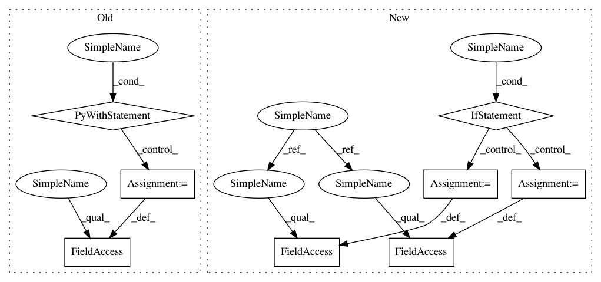

caca2348bd54ec25d71ee05fd2a58e12db39f2e4,texar/modules/decoders/rnn_decoder_base.py,RNNDecoderBase,__init__,#RNNDecoderBase#Any#Any#Any#Any#,35
Before Change
"Either `output_layer` or `vocab_size` must be provided. "
"Set `output_layer=tf.identity` if no output layer is "
"wanted.")
with tf.variable_scope(self.variable_scope):
self._output_layer = tf.layers.Dense(units=self._vocab_size)
elif output_layer is not tf.identity:
if not isinstance(output_layer, tf.layers.Layer):
raise ValueError(
"`output_layer` must be either `tf.identity` or "
After Change
return self._helper.batch_size
@property
def output_size(self):
Output size of one step.
raise NotImplementedError
@property
def output_dtype(self):
Types of output of one step.
raise NotImplementedError
def initialize(self, name=None):
// Inherits from TFDecoder
// All RNN decoder classes must implement this
raise NotImplementedError
def step(self, time, inputs, state, name=None):
// Inherits from TFDecoder
// All RNN decoder classes must implement this
raise NotImplementedError
def finalize(self, outputs, final_state, sequence_lengths):
// Inherits from TFDecoder
// All RNN decoder classes must implement this
raise NotImplementedError
@property
def cell(self):
The RNN cell.
return self._cell
def zero_state(self, batch_size, dtype):
Zero state of the rnn cell.
Same as :attr:`decoder.cell.zero_state`.
In pattern: SUPERPATTERN
Frequency: 3
Non-data size: 8
Instances
Project Name: asyml/texar
Commit Name: caca2348bd54ec25d71ee05fd2a58e12db39f2e4
Time: 2018-03-24
Author: zhitinghu@gmail.com
File Name: texar/modules/decoders/rnn_decoder_base.py
Class Name: RNNDecoderBase
Method Name: __init__
Project Name: asyml/texar
Commit Name: caca2348bd54ec25d71ee05fd2a58e12db39f2e4
Time: 2018-03-24
Author: zhitinghu@gmail.com
File Name: texar/modules/decoders/rnn_decoder_base.py
Class Name: RNNDecoderBase
Method Name: __init__
Project Name: dmlc/gluon-cv
Commit Name: ec5bcece006120b6cbb2a7b420e00ae218083b44
Time: 2019-10-15
Author: jerryzh.cn@gmail.com
File Name: gluoncv/nn/coder.py
Class Name: NormalizedPerClassBoxCenterEncoder
Method Name: __init__
Project Name: dmlc/gluon-nlp
Commit Name: a947d66d28baaae1302363556a8a18b04fa6aa40
Time: 2018-08-16
Author: leonard@lausen.nl
File Name: gluonnlp/embedding/evaluation.py
Class Name: ThreeCosMul
Method Name: __init__